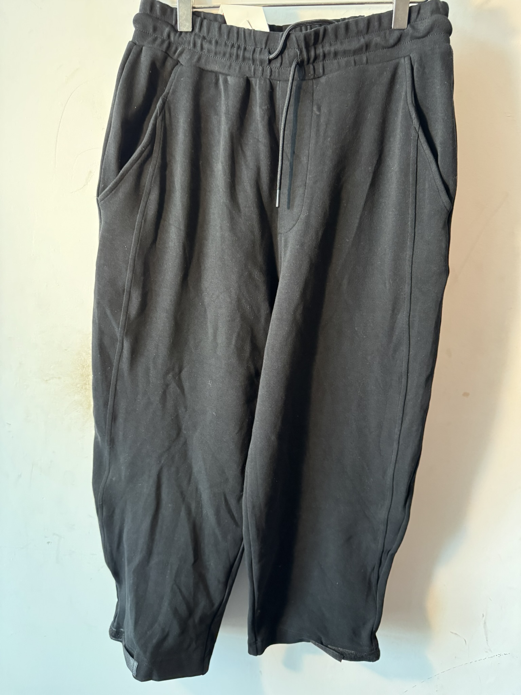
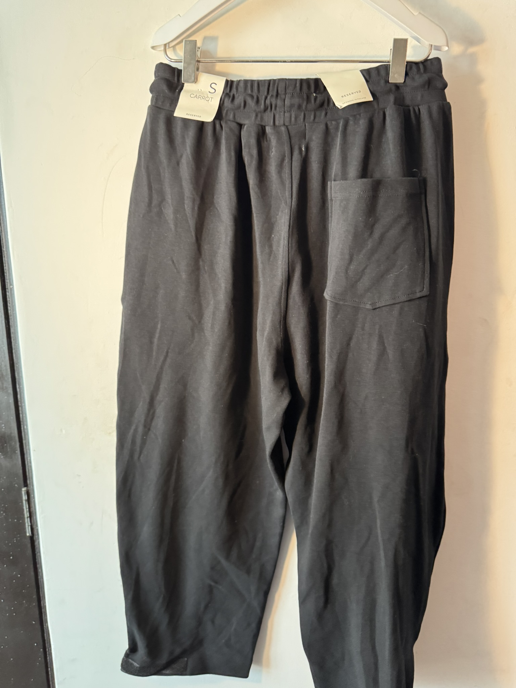
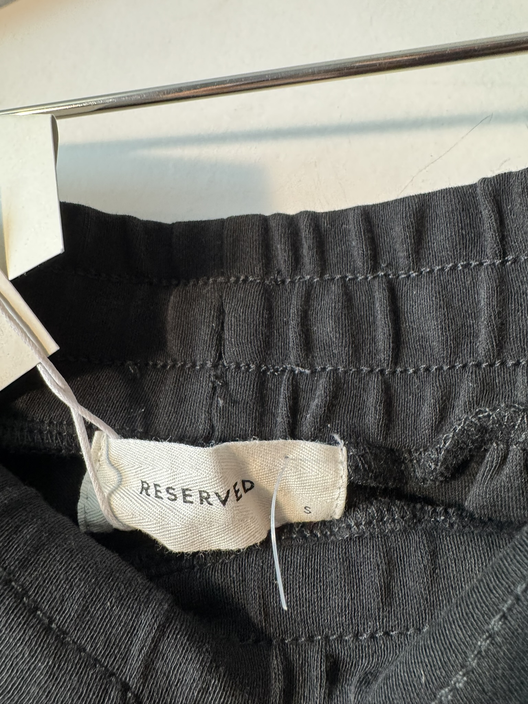

$250.00 MXN
Descripción
Pantalones deportivos en corte "Carrot Fit" (más amplio en cadera y muslos, ajustado hacia los tobillos), color negro sólido y cintura elástica, ideales para una silueta relajada y moderna.
Marca
Reserved
Tallas Disponibles
S
Comprar por WhatsApp 💬